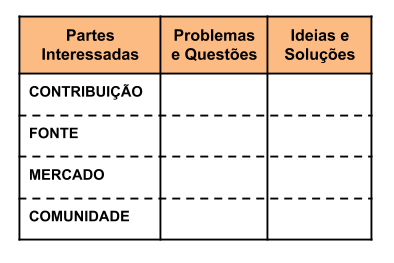

O Quadro de Avaliação é um artefato que estende o Diagrama de Partes Interessadas, informando sobre problemas presentes na situação atual ou problemas potenciais das partes interessadas.
São identificadas as ideias ou soluções vislumbradas que possuem potencial impacto no desenho da solução para o problema (Baranauskas et al., 2013).

Representação do Quadro de Avaliação. Adaptado de Baranauskas et al. (2013)
Referências
Baranauskas, M. C. C., Martins, M. C. e Valente, J. A. (2013). Codesign de Redes Digitais: tecnologia e educação a serviço da inclusão social. Penso Editora.